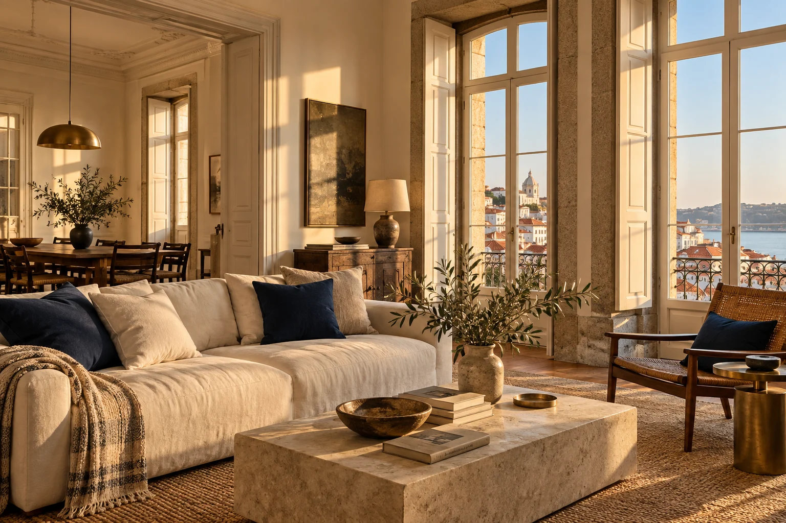

Um contacto prático
Tratamos os pedidos correntes do inquilino, registamos os problemas e coordenamos o passo seguinte dentro do âmbito acordado.
Falar de apoio ao inquilinoPara proprietários com inquilino ou com um arrendamento tratado por um mediador licenciado. Ajudamos a coordenar o dia a dia, com âmbito definido e controlo claro por parte do proprietário.
Gestão de imóveis para proprietários em Portugal.

Responsabilidades acordadas. Informação regular.
Tratamos os pedidos correntes do inquilino, registamos os problemas e coordenamos o passo seguinte dentro do âmbito acordado.
Falar de apoio ao inquilinoAcompanhamos as rendas devidas e os pagamentos confirmados na sua conta, com os comprovativos acordados. Identificamos o que está pendente para seguimento.
Dinheiro e aprovaçõesContratamos os prestadores adequados, procuramos preços ajustados, obtemos as aprovações necessárias e registamos o trabalho feito.
Coordenação da manutençãoAcordamos o tempo de administração incluído, a frequência dos relatórios, o calendário de inspeções e a forma de combinar o acesso com o inquilino. Deslocações para além do âmbito acordado são indicadas à parte.
Mão de obra, materiais, limpezas, serviços jurídicos e eventuais comissões de colocação de inquilino são separados da gestão corrente. A proposta explica os períodos sem inquilino, as rendas em atraso e o trabalho adicional.
Diga-nos a localização, a situação do arrendamento e o que quer que tratemos. Basta uma mensagem de WhatsApp, um email ou uma chamada.
Confirmamos que conseguimos acompanhar bem o imóvel e enviamos uma proposta escrita com o âmbito, os honorários, o IVA e o pré-aviso.
Assina um contrato de gestão que define os serviços, os limites de aprovação e os relatórios.
Recebemos as chaves, os contactos do inquilino e os registos de si ou da empresa anterior, e começamos.
A procura de inquilino, as visitas e as negociações são feitas através de um mediador imobiliário independente e devidamente licenciado. Aconselhamento sobre contratos, litígios e cobranças formais ficam a cargo de consultores qualificados.
A renda é sempre paga diretamente na conta bancária do proprietário. Nunca a recebemos nem a guardamos. Acordamos como se comprova o recebimento e que despesas precisam de aprovação, e a caução fica com o proprietário, nos termos do contrato de arrendamento. Os honorários da Blue Door são 10% da renda mensal, mais IVA, faturados à parte; não são descontados da renda.
As visitas exigem acesso acordado e estão previstas na proposta. Comunicar um problema não inclui automaticamente uma deslocação; as deslocações e a resposta a urgências são confirmadas antecipadamente.
Diga-nos onde fica, como o usa e o que quer que tratemos. Falamos da cobertura e preparamos um âmbito e um valor para analisar.